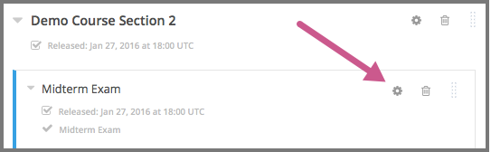
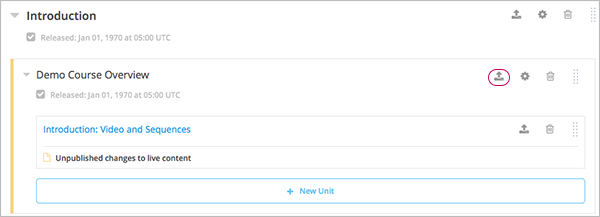
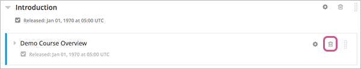

7.4. Developing Course Subsections#
To develop subsections in your course, you must first understand the following topics.
7.4.1. What Is a Subsection?#
Sections are divided into subsections, which in turn contain one or more units. A subsection may represent a topic in your course, or another organizing principle. Subsections are sometimes called “lessons” or they might represent a week’s worth of material.
7.4.2. Viewing Subsections in the Outline#
In the following image, the Studio view of the course outline is on the left. On the right is the view of the course outline in the LMS.

The numbers represent the following levels.
Note
The Course Outline page does not show components. You add or access components by selecting the units that contain the components.
7.4.2.1. Course Progress Information#
The course outline in the LMS also indicates a learner’s progress through the course. A green check mark next to the name of a section, subsection, or unit indicates that a learner has completed all the following actions in the section, subsection, or unit.
Viewed all of each video.
Submitted answers for all of the problems.
Viewed all HTML content for at least five seconds.
If a learner selects the Resume Course option, the course opens to the unit that the learner most recently completed.
For information about more specific learner data, including the learner’s grades or answers for individual problems, see Managing Learner Progress and Grades.
7.4.3. Subsections and Visibility to Learners#
Learners cannot see any content in a subsection until you schedule a release date, and that release date has passed.
If a subsection’s release date has passed, learners can see content in the subsection if the following conditions are met.
The release date of the parent section has passed.
The units have been published.
The subsection or the units are not hidden from learners.
To control whether learners have access to the subsection and its units after a subsection’s release date, you can apply various visibility settings.
By default, the subsection and its units are available to learners, except for any units that you have explicitly hidden from learners.
You can also choose to entirely hide a subsection so that the subsection and its units are not visible to learners at all in the course navigation, or you can hide the contents of a subsection after the subsection due date has passed. For more information about subsection visibility settings, see Hiding a Subsection from Learners.
Note
Release dates and times that you set are in Coordinated Universal Time (UTC). You might want to verify that you have specified the time that you intend by using a time zone converter such as Time and Date Time Zone Converter.
Learners who have specified a time zone in their account settings see course dates and times converted to their specified time zone. Learners who have not specified a time zone in their account settings see course dates and times on their dashboards, in the body of the course, and on their Progress pages in the time zone that their browsers specify. Learners see other course dates and times in UTC.
7.4.4. Release Statuses of Subsections#
As a course author, you control the release status of subsections. For the content of a subsection to be visible to learners, the subsection must be released. See the following topics for more information about the possible release statuses of subsections.
7.4.4.1. Scheduled with the Section#
When you create a subsection, it is set by default to release on the same date and time as the section it is in. Therefore, published content in the subsection is visible to learners at the date and time the section is released.
When a subsection is in the “Scheduled with Section” state, and the section is scheduled, the subsection is visible in the outline with a vertical green bar next to the subsection’s display name.
You can change the release date for a subsection to be different from the section it is in. For more information, see Set a Subsection Release Date.
7.4.4.2. Unscheduled#
If the parent section is unscheduled, when you create a new subsection it will also be unscheduled.
Regardless of the publishing status of units within the subsection, no content in an unscheduled subsection is visible to learners.
When a subsection is unscheduled, the subsection is visible in the outline with a vertical gray bar next to the subsection’s display name.
Content in the subsection is not visible to learners until you set a release date and the date passes.
7.4.4.3. Scheduled Later than the Section#
You can set a subsection to release on a date after the section releases.
Content in a subsection that is scheduled for release on a future date is not visible to learners, even if some or all of the units in the subsection are published.
When a subsection is scheduled, even if the subsection is scheduled to release later than the section, the subsection is visible in the outline with a vertical green bar next to the subsection’s display name.
The scheduled date must pass for the subsection to be visible to learners.
7.4.4.4. Scheduled with Unpublished Changes#
You can make changes to a published unit before its parent subsection is released.
In this situation, when the release date for the subsection passes, the last published version of units within the subsection are made visible to learners. The changes in units are not visible to learners until you publish them.
When a subsection is scheduled but has unpublished changes, the subsection is visible in the outline with a vertical yellow bar next to the subsection’s display name. When you expand the subsection, the unit that has unpublished changes is visible.
7.4.4.5. Released with Unpublished Changes#
If you modify a unit within a released subsection, those modifications are not visible to students until you publish them.
When a subsection is scheduled but has unpublished changes, the subsection is visible in the outline with a vertical yellow bar next to the subsection’s display name. When you expand the subsection, the unit that has unpublished changes is visible.
7.4.4.6. Released#
A subsection that is released is visible to learners; however, learners see only units within the subsection that are published.
When a subsection is released, the subsection is visible in the outline with a vertical blue bar next to the subsection’s display name.
7.4.4.7. Staff Only Content#
A subsection can contain a unit that is hidden from learners and available to members of the course team only. That unit is not visible to learners, even if the subsection has been released.
When a subsection contains a unit that has staff-only content, the subsection is visible in the outline with a vertical black bar next to the subsection’s display name.
7.4.5. Create a Subsection#
To create a new subsection, follow these steps.
In the outline, expand the section in which you want to create a new subsection.
Select New Subsection at the bottom of the expanded section. A new subsection appears at the end of the section, with the subsection name selected.
Enter the name for the new subsection. A descriptive name can help learners locate content in the course. It can also help you select content when you analyze performance in edX Insights.
Add units to the new subsection as needed.
It is recommended that you test course content as you create new subsections.
7.4.6. Change a Subsection Name#
To change a subsection name, select the Edit icon next to the subsection name. The name field becomes editable. Enter the new name, and then tab or click outside of the field to save the name.
7.4.7. Set a Subsection Release Date#
To set the subsection release date, follow these steps.
Select the Configure icon in the subsection box.
The subsection settings dialog box opens.
On the Basic tab, under Release Date and Time, enter the release date and time for the subsection.
Note
The time that you set is in Coordinated Universal Time (UTC). You might want to verify that you have specified the time that you intend by using a time zone converter such as Time and Date Time Zone Converter.
Learners who have specified a time zone in their account settings see course dates and times converted to their specified time zone. Learners who have not specified a time zone in their account settings see course dates and times on their dashboards, in the body of the course, and on their Progress pages in the time zone that their browsers specify. Learners see other course dates and times in UTC.
Select Save.
{kind=link}
For more information, see Release Dates.
7.4.8. Set the Assignment Type and Due Date for a Subsection#
You set the assignment type for problems at the subsection level.
When you set the assignment type for a subsection, all problems in the subsection are graded and weighted as a single type. For example, if you designate the assignment type for a subsection as Homework, then all problem types in that subsection are graded as homework.
Note
Unlike other problem types, by default, ORA assignments are not governed by the subsection due date, but are instead set in the assignment’s settings. There is, however, a setting that allow ORAs to instead use the subsection due date. For details, see Step 6. Assignment Schedule.
To set the assignment type and due date for a subsection, follow these steps.
Select the Configure icon in the subsection box.
The subsection settings dialog box opens.
On the Basic tab, locate the Grading section.
In the Grade as list, select the assignment type for this subsection.
For Due Date and Due Time in UTC, enter or select a due date and time for problems in this subsection.
Note
The time that you set is in Coordinated Universal Time (UTC). You might want to verify that you have specified the time that you intend by using a time zone converter such as Time and Date Time Zone Converter.
Learners who have specified a time zone in their account settings see course dates and times converted to their specified time zone. Learners who have not specified a time zone in their account settings see course dates and times on their dashboards, in the body of the course, and on their Progress pages in the time zone that their browsers specify. Learners see other course dates and times in UTC.
Optionally, for a course that has the timed exam feature enabled, select the Advanced tab to set the subsection to be timed.
Select Save.
For more information, see Establishing a Grading Policy For Your Course.
7.4.9. Set Problem Results Visibility#
By default, when learners submit answers to problems, they immediately receive the results of the problem: whether they answered the problem correctly, as well as their scores. However, you might want to temporarily hide problem results from learners when you run an exam, or permanently hide results when you administer a survey. You can do this by using the Assessment Results Visibility setting.
Note
The Assessment Results Visibility setting is a subsection setting. You cannot change the visibility of individual problems. The Assessment Results Visibility subsection setting overrides the Show Answer setting for individual problems. Answers to problems are not visible when results are hidden.
The Assessment Results Visibility setting can be used with the following common problem types.
The Assessment Results Visibility setting can be used with the following advanced problem types.
To change the results visibility for your subsection, follow these steps.
Select the Configure icon in the subsection box.
The Settings dialog box opens.
Select the Visibility tab, and locate Assessment Results Visibility.
Select one of the available options.
Always show results: This is the default setting. Problem results and subsection scores are visible immediately when learners and staff submit answers.
Never show results: Subsection scores are visible, but problem results are never visible to learners or to course staff.
Show results when subsection is past due: For learners, results are not visible until the subsection due date (for instructor-paced courses) or the course end date (for self-paced courses) has passed. For course staff, results are always visible unless the staff member is previewing or viewing the course as a learner.
Note
If the subsection does not have a due date, or the course does not have an end date, results are always visible.
Select Save.
7.4.10. Publish All Units in a Subsection#
To publish all new and changed units in a subsection, select the Publish icon in the box for the subsection.
{kind=link}
Note
The Publish icon only appears when there is new or changed content within the subsection.
See Unit Publishing Statuses for information about statuses and visibility to learners.
7.4.11. Hiding a Subsection from Learners#
You can hide a subsection from learners in the following ways.
Entirely hide the subsection so that it does not appear in course navigation. Subsections that are hidden in this way are not included when grades are calculated.
Prevent learners from accessing a subsection’s contents after its due date (for instructor-led courses) or the course end date (for self-paced courses) has passed, but keep the subsection visible in course navigation. Subsections that are hidden based on date remain included when grades are calculated.
You can also hide just the answers to problems in the subsection, leaving the problems visible. For more information, see Set Problem Results Visibility.
For more information, see Visibility Settings.
7.4.11.1. Entirely Hide a Subsection from Learners#
You can completely hide a subsection and its content from learners, regardless of the status of units within the section. Subsections hidden in this way are not shown in the course navigation, and are not included when grades are calculated.
To entirely hide a subsection from learners, follow these steps.
Select the Configure icon in the subsection box.
The subsection settings dialog box opens.
On the Visibility tab, locate Subsection Visibility, and then select Hide entire subsection.
Select Save.
None of the content in the subsection is visible to learners. In the course outline, the subsection is shown with a lock icon, indicating that it is available only to course staff.
To make the subsection visible to learners, repeat these steps and select Show entire subsection.
Warning
When you make a previously hidden subsection visible, not all content in the subsection is necessarily made visible to learners. Units that were explicitly hidden from learners remain hidden.
7.4.11.2. Hide a Subsection Based on Date#
You can make a subsection’s content unavailable based on date. For example, you might want to make exam questions unavailable after a certain date. For instructor-led courses, this option uses the subsection’s due date. For self- paced courses, this option uses the course’s end date.
Subsections that are hidden in this way remain visible in the course navigation, and are included when grades are calculated. However, learners can no longer access the subsection’s content after the due date or the course end date.
Note
If you want to continue to show a subsection’s content, but hide learners’ results for problems in the subsection, see Set Problem Results Visibility.
To hide a subsection based on date, follow these steps.
Select the Configure icon in the subsection box.
The subsection settings dialog box opens.
On the Visibility tab, locate Subsection Visibility, and then select the appropriate option.
In instructor-led courses, select Hide content after due date.
In self-paced courses, select Hide content after course end date.
Select Save.
Learners who access the subsection after the due date or course end date has passed are shown a message indicating that the subsection is no longer available because the due date (or course end date) has passed.
In the course outline in Studio, the subsection is shown with an icon and a “Subsection is hidden after due date” or “Subsection is hidden after course end date” message under the subsection’s display name.
7.4.12. Delete a Subsection#
When you delete a subsection, you delete all units within the subsection.
Warning
You cannot restore course content after you delete it. To ensure you do not delete content that you might need later, you can move any unused content to a section in your course that you set to never release.
To delete a subsection, follow these steps.
In the subsection that you want to delete, select the Delete icon.

When the confirmation prompt appears, select Yes, delete this subsection.